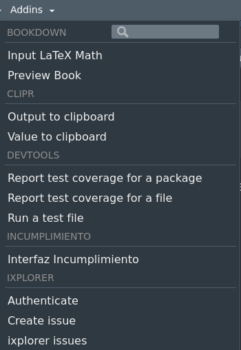
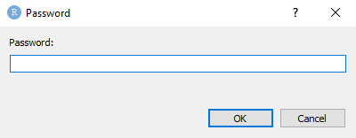
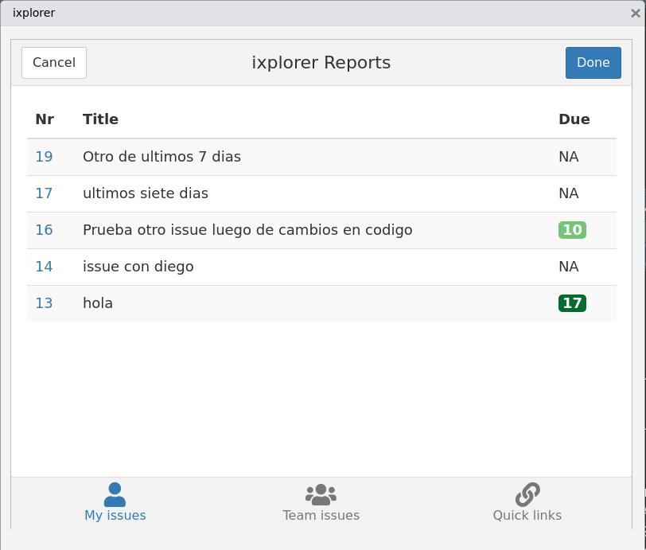
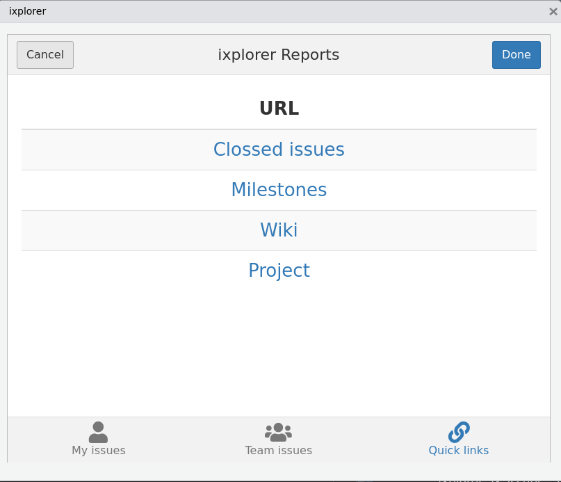

ixplorer: DataOps amigables en RStudio
ixpantia
2022-06-06
Source:vignettes/ixplorer.Rmd
ixplorer.RmdEsta viñeta tiene el propósito de mostrar cómo trabajar con ixplorer de manera más profunda.
Acerca de este paquete
En el flujo de trabajo de un desarrollador, a menudo estamos en contacto con un servicio Git en internet. Allí mantenemos nuestro código en repositorios pero, lo más importante, nos comunicamos con nuestro equipo y construimos colaboraciones de manera organizada y efectiva. Sin embargo, también pasamos mucho tiempo en un IDE como RStudio. Esto plantea la necesidad de un canal que nos permita comunicarnos con nuestro equipo sin tener que salir de nuestro espacio de trabajo.
El paquete ixplorer tiene como objetivo mejorar la comunicación de esta manera al ser un canal donde colaboramos con nuestro equipo en el servicio git pero sin detenernos mientras escribimos código.
Gitea es una herramienta de software de código abierto qe permite alojar el control de versiones de desarrollo de software mediante Git. Ixplorer usa gadgets de Shiny y el paquete gitear. Juntos, estos permiten echar un vistazo rápido a sus tiquetes en su instancia de gitea e incluso crear uno fácilmente mientras codifica.
Gadgets de ixplorer
Los gadgets de ixplorer son una forma de crear y revisar los tiquetes de su proyecto sin tener de salir de RStudio y más importante aún: sin tener que interrumpir su flujo de trabajo.
¿Cómo usar los gadgets de ixplorer?
Primero tenemos que instalar el paquete ixplorer:
devtools::install_github("ixpantia/gitear")Cuando estamos listos con la instalación podremos ver tres opciones en el menú de Addins bajo el encabezado IXPLORER
- Autentificación
- Crear tiquete
- Tiquetes actuales

Gadget de Autentificación
Este es el primer paso para poder generar tiquetes o revisarlos dentro de su repositorio de determinado proyecto. Necesitará un token API. (Que será proveído por su administración del proyecto.)
Pestaña de registro
El gadget de autenticación tiene dos pestañas, la primera es la pestaña de inicio de sesión, donde guardará sus credenciales por primera vez. La pestaña se ve así:

En el segmento del URL ixplorer es necesario
asegurarse de incluir la dirección de internet de su repositorio
ixplorer. Deberá de ser similar a
https://ixplorer_name.ixpantia.com
A continuación, deberá ingresar su token de acceso, que obtendrá de su entorno ixplorer o su servicio autohospedado de git. Del mismo modo, el nombre de usuario es el mismo que usa para ingresar a su entorno ixplorer. Si necesita más información sobre cómo obtener sus credenciales, hay una viñeta de “credenciales” que aborda esta pregunta con más detalle.
El siguiente paso es llenar el nombre del proyecto upstream. Este es el proyecto donde la versión fuente de su repositorio reside. Desde ésta fuente, usted y otros miembros del equipo habrán bifurcado y clonado el repositorio para generar cambios y proponerlos como solicitudes de fusión. En el flujo de trabajo, todos los tiquetes se manejan de manera centralizada en el proyecto upstream. Cualquier tiquete que sea generado un su bifurcación personal, no será visualizado a través del ixplorer gadget (y en general no recomendamos trabajar con tiquetes personales)
En el segmento de nombre del repositorio ixplorer por favor escriba el nombre del repositorio en específico sobre el cual desea trabajar en la sesión activa del proyecto de RStudio.
Adicionalmente, el gadget de autentificación cuenta con un espacio opcional para para elegir su idioma preferido. Los gadgets posteriores serán desplegados siempre en el idioma que usted elija.
Contraseñas
Una vez que se presione el botón “listo” o “done” es posible que se le pida establecer una contraseña. Esta contraseña puede ser requerida la próxima ve que usted inicie una nueva sesión y quiera obtener información de esta instancia, por ejemplo sus tiquetes abiertos. Por lo tanto es importante almacenar esta contraseña en un lugar seguro, preferiblemente un gestor de contraseñas apropiado. La ventana que pregunta por su contraseña se ve así:

La próxima vez que inicie una nueva sesión y utilice una función del paquete ixplorer, se mostrará una ventana similar. Esta vez, sin embargo, deberá ingresar la contraseña que estableció previamente durante la autenticación y no una nueva contraseña. Su contraseña se guarda de manera segura utilizando el paquete keyring
Pestaña de ixplorar
Si usted ya ha guardado previamente sus credenciales para alguna instancia se puede dirigir directamente a la pestaña de “ixploring” o “ixplorando”en el gadget. Aquí se le mostrará la opción para elegir la instancia en la que quiere trabajar, luego la opción para elegir entre los proyectos de esa instancia y finalmente los repositorios.

Tener precaución en este paso si se encuentra trabajando sobre la computadora de alguien más, ya que sus datos de autentificación serán guardado en esa computadora. Por ende si va a trabajar en la computadora de alguien más o en una computadora compartida, lo mejor será usar la funcion eliminar_credenciales() o bien delete_credentials() al final de su sesión de trabajo para eliminar completamente las credenciales de su computador.
Gadget crear un tiquete
A este punto deberá de haber concluido el proceso de autentificación. Si esto es correcto usted será capaz de crear un tiquete ¡sin tener que salir de RStudio!
Si todo está correcto, usted verá la sección de título del tiquete y Descripcción. Sino es así, verá un texto de advertencia mencionando lo que está faltando. Este gadget funciona sobre la ultima instancia que usted haya guardado en el gadget de autentifiación. Un mensaje del tipo “usted está actualmente en la instancia de prueba” aparece en su consola para que se pueda cerciorar de que está creando el tiquete en el repositorio apropiado. Esta ventana aparecerá en el idioma que haya guardado en el gadget de autentificación

En este gadget usted puede crear un tiquete sin perder su flujo de trabajo o ideas. Si necesita crear un nuevo tiquete (deseo/mejora/pregunta/error) usted puede ir a Addins > Crear tiquete y bajo la sección Titulo del tiquete puede escribir el título que identifica el nuevo tiquete y bajo la sección Descripción ingrese la idea del tiquete.
Este tiquete aparecerá en su repositorio de ixplorer bajo los tiquetes abiertos.
Tiquete actuales
Este gadget está diseñado para darle un vistazo rápido de los tiquetes activos y su estado. Además encontrará los enlaces que lo llevarán al ixplorer si desea revisar detalles tales como comentarios o hacer cambios a los tiquetes tales como fechas límites de asignaciones.
En la primera pestaña Mis tiquetes podrá encontrar los tiquetes asignados a usted con el número de identificación que también es un enlace al tiquete en el entorno ixplorer. Así mismo verá la columna con el número de días que restan (en color verde) o días pasados la fecha límite (en color rojo).
Esta ventana funciona sobre la ultima instancia que usted haya guardado en el gadget de autentificación. Un mensaje del tipo “usted está actualmente en la instancia de prueba” se imprimirá en su consola para ayudar a cerciorarse de que esta viendo los tiquetes de la instancia correcta. Para cambiar la instancia puede usar la pestaña “ixploring” del gadget de autentifiación. Esta ventana aparecerá en el idioma que usted haya previamente seleccionado.

En la segunda pestaña Tiquete del equipo podrá revisar todos los tiquetes abiertos relacionados al proyecto actual y asignados a todos los miembros del equipo menos a usted. El número de identificación es un enlace a la información completa del tiquete en el entorno ixplorer y la columna “fecha límite” es cuántos días restan (en verde) o cuántos días han sido sobrepasados (en rojo) con respecto a la fecha límite.

Finalmente la pestaña de Enlaces rápidos tiene los enlaces a los componentes principales del repositorio del proyecto, así no tendrá que escribir mucho en su navegdor web para encontrar una dirección en específico.
Estos enlaces le permitirán encontrar de una manera más rápida detalles específicos del repositorio de su proyecto como tiquetes cerrados, hitos, el wiki o el sitio del proyecto donde se encuentran otros repositorios concernientes.

Otras funciones útiles
A parte de los gadgets, ixplorer ofrece las siguientes funciones para obtener información desde la consola.
Vea sus tiquetes en tibbles
listar_tiquetes_abiertos(): Devuelve un tibble con sus tiquetes abiertos. Este tibble tiene el número de tiquete, el título del tiquete y el hito al que pertenece. Utiliza, por defecto, la ultima instancia que guardó en el gadget de autentificación. Sin embargo, se puede espeficiar la instancia deseada utilizando la variable “instancia” dentro de la función. También se puede especificar el número de días hacia atrás de donde quiera obtener los tiquetes.
listar_tiquetes_cerrados(): Devuelve un tibble con sus tiquetes cerrados. Este tibble tiene el número de tiquete, el título del tiquete y el hito al que pertenece. Utiliza, por defecto, la ultima instancia que guardó en el gadget de autentificación. Sin embargo, se puede espeficiar la instancia deseada utilizando la variable “instancia” dentro de la función. También se puede especificar el número de días hacia atrás de donde quiera obtener los tiquetes.
list_open_pr(): Devuelve un tibble con sus solicitudes de fusión abiertas. Está función busca las solicitudes de fusión asignadas a usted en todas sus instancias de ixplorer guardadas por defecto. Sin embargo, tanto la instancia como la persona asignada pueden especificarse.
Funciones para facilitar el control de versiones
Durante el control de versiones de git, a menudo realizamos ciertas tareas que requieren comandos repetitivos. Las siguientes funciones apuntan a resumir esto en un solo paso.
actualizar_rama(): Permite actualizar su rama master desde su upstream automaticamente mediante un rebase. Hace los pasos que usualmente usamos, fetch upstream, checkout master, rebase upstream/master, y push.
incluye_upstream(): Permite incluir su upstream directamente de su repositorio activo en Rstudio. Por defecto toma la información de la ultima instancia guardada en
fijar_tiempo_credenciales(): Permite especificar el tiempo que desea guardar sus credenciales de git en su servidor remoto. El valor por defecto es de 4 horas. La función toma su tiempo en segundos.
Publicar un wiki
- publica_wiki(). Los wikis son de especial importancia cuando se quiere documentar de manera sencilla lo que sucede en el repositorio. Para publicar un wiki con publica_wiki(), el primer paso es crear la primera página manualmente. Esto se logra en la pestaña de “wiki” en el repositorio. El siguiente paso es clonar el repositorio del wiki. Este url para clonar el wiki es diferente al que usamos para clonar el repositorio donde encontramos nuestro código. Una vez que clonamos este repositorio podemos usar publica_wiki().